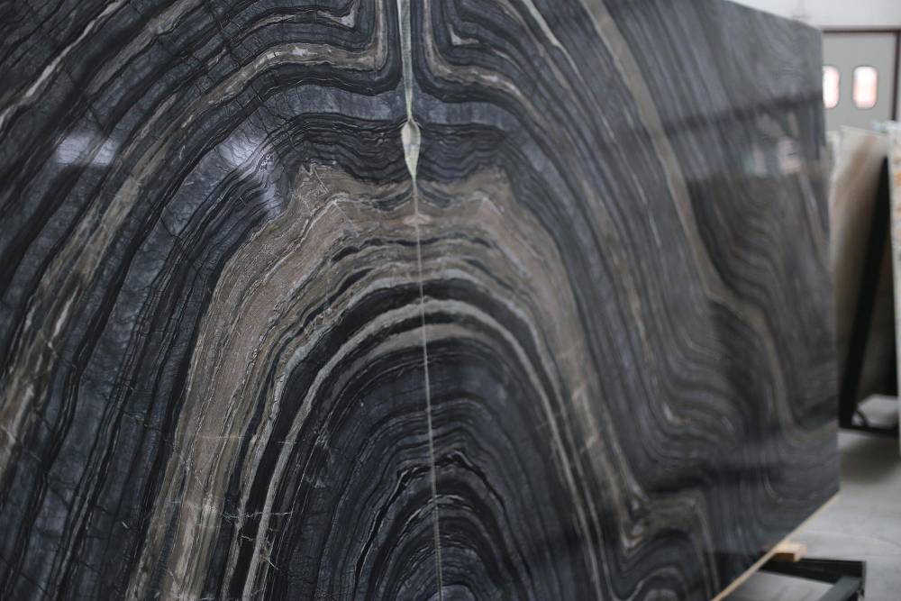

Bienvenidos!
Aprendimos el oficio en casa y lo perfeccionamos con décadas de práctica. Hoy seguimos siendo una empresa cercana, con la misma atención personalizada de siempre, pero con procesos más precisos y materiales mejor seleccionados.
Cada proyecto es una oportunidad de demostrar lo que somos. Terminaciones impecables, plazos cumplidos y un equipo que se involucra desde la primera consulta hasta la entrega final.
